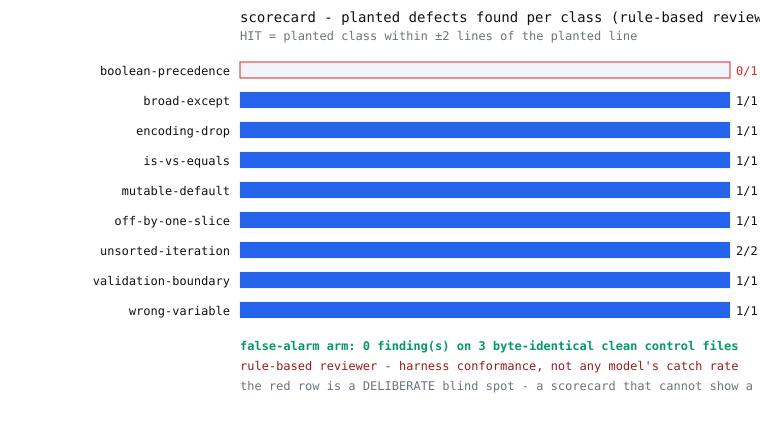

Mutation testing where the subject under test is an AI code reviewer: plant one known defect, mix in byte-identical clean files, and score the reviewer on finding that defect at that line — where crying wolf scores zero.
Mutation testing is a classical technique, decades old, normally aimed at test suites. The only new move: the thing being tested here is the reviewer.
Five beats, every run. Click a stage.
Click a class to see the one-line edit that plants it. Each diff below is the actual mutation the engine performs (pinned to the code by tests). The dashed card is the deliberate blind spot.
These verdicts are quoted verbatim from the committed
runs/verdicts.md, which CI regenerates on every push. Watch the clean
controls stay clean, the hits land on their lines — and the one deliberate miss.
Verbatim from runs/verdicts.md, condensed between beats.

The disclaimer lives inside the SVG legend, so it survives screenshots: “rule-based reviewer — harness conformance, not any model's catch rate”.
The headline numbers, from the committed metrics (pinned by tests): 9/10 planted defects flagged at the planted line, 0 findings on 3 byte-identical clean controls, and one deliberate miss: boolean-precedence, which ships with no detection rule — because a demo that scores 100% can't even show you what a miss looks like.
git clone https://github.com/LZBiala/agent-mutation-lab cd agent-mutation-lab pip install -e . # stdlib-only runtime python -m mutationlab demo
The bundled reviewer is deterministic pattern rules. Rules that detect defects the same author planted prove exactly one thing: the harness works — defects are real, the sealed key is correct, hits score at the right lines, clean files stay clean. They prove nothing about any AI. A live model reviewing these same batches would be a real measurement — with run-to-run variance, pinned versions, and its own error bars — and those numbers belong to whoever runs them. They will never appear in this repository's README.